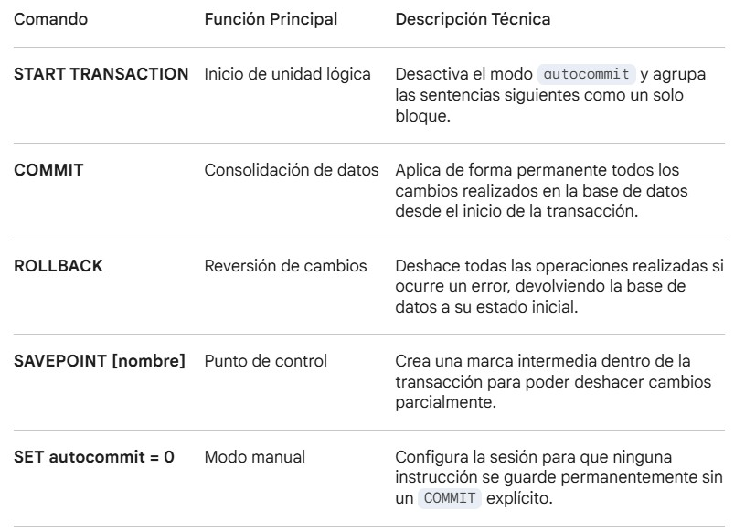

Texto
1. Definición de Transacción
Una transacción es una unidad lógica de trabajo que comprende una o más sentencias SQL. Su objetivo principal es asegurar que la base de datos pase de un estado consistente a otro, evitando datos parciales o corruptos en caso de error en el sistema.
Propiedades ACID (El Estándar de Excelencia)
Atomicidad (A): Las instrucciones se ejecutan como un bloque único; o se hacen todas o ninguna.
Consistencia (C): La base de datos debe cumplir todas las reglas de integridad antes y después del proceso.
Aislamiento (I): Las operaciones son invisibles para otros usuarios hasta que la transacción finaliza.
Durabilidad (D): Una vez confirmados los cambios, estos son permanentes ante cualquier fallo.
2. Comandos Fundamentales

3. Ejemplo de Implementación
En un sistema de gestión de campeonatos, para inscribir a un alumno y asignarle un hardware de forma segura:

4. Niveles de Aislamiento
Permiten configurar la visibilidad de los datos entre transacciones concurrentes:
- READ UNCOMMITTED: Permite lecturas de datos no confirmados (riesgo de datos sucios).
- READ COMMITTED: Solo lee datos que ya han sido confirmados por otros.
- REPEATABLE READ: (Nivel por defecto en MySQL/InnoDB) Asegura lecturas consistentes durante toda la transacción.
- SERIALIZABLE: Máximo nivel de seguridad; las transacciones se ejecutan en orden estricto